View tab
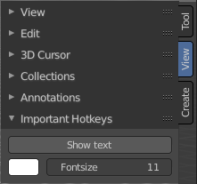
The View tab contains viewport related settings.
The content is in all modes and for all object types the same.
View tab - View Panel
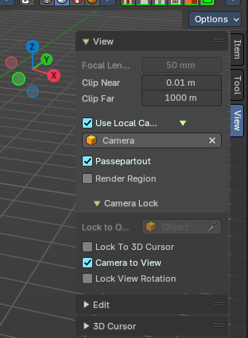
The View panel contains some camera settings for the world camera and the render camera.
| Entry | What it does |
|---|---|
| Focal Length | Set up the focal length for the world camera. You need to be in perspectivic view. In Orthographic view the lens values doesn't have an effect. |
| Clip Near / Clip Far | Set up the clipping values for the world camera. Geometry behind the end value and before the start value will not be drawn. |
Use Local Camera
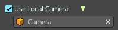
Normally when you render an image it gets rendered from the currently active camera. Define a custom camera that is always used for rendering. Regardless which camera is the active one.
Passepartout
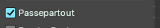
Toggles and shows all camera passepartout overlays.
Use Render Region
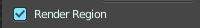
When you have defined a render region rectangle, then you can toggle it on and off with this switch. See View menu in the 3d view header, the render region menu item.
Camera Lock
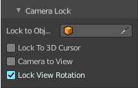
Camera Lock is a sub tab with camera related settings.
| Entry | What it does |
|---|---|
| Lock to Object | Locks the view of the world camera to an object. Choose an object for it. |
| Lock to 3D Cursor | Locks the view of the world camera to the 3D cursor. You can either lock to an object or to the 3d cursor. When you choose an object then the checkbox for the 3d cursor vanishes. |
Lock Camera to view
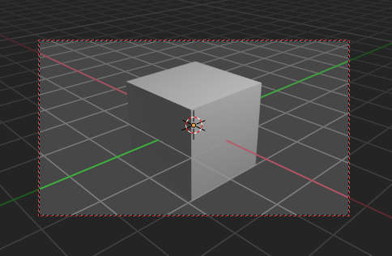
This menu item allows you to navigate in camera view like you would be in world view. When it is unticked then you can navigate the passepartout, you can zoom and move it. And when you rotate the view, then you will leave the camera mode.
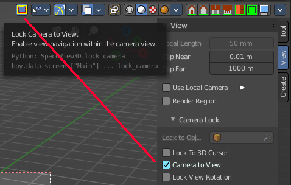
Note that this functionality also exists in the header when you are in camera view. This double menu entry exists by design.
Lock View Rotation
Locks the camera rotation, you cannot rotate the camera anymore. A use case is the 2D Animation workspace, where you can easily accidentally rotate the orthographic view out of position.
View tab - Edit Panel
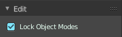
Lock Object Modes
Restrict selection to content that is in the same mode than the current element.
View Tab - 3D Cursor Panel
Location
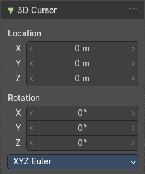
The position of the 3D cursor in world coordinates.
Rotation
The rotation of the 3D cursor in world coordinates.
Right Click menu
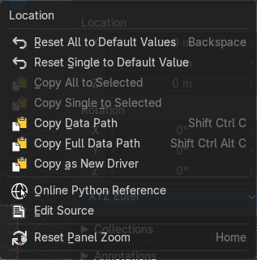
When you right click at the edit boxes then a menu with further functionality appears.
| Entry | What it does |
|---|---|
| Reset All to Default Value | Resets the X Y and Z values to the default value. |
| Reset Single to Default Value | Resets the value for the single edit box under the mouse to the default value. |
| Entry | What it does |
|---|---|
| Copy All to Selected | Allows to copy the current rotation of all axis to another object. Workflow. Select target object, hold down shift, select source object, and use Copy All to Selected. |
| Copy Single to Selected | Allows to copy the current rotation of the single selected axis to another object. Workflow. Select target object, hold down shift, select source object, and use Copy All to Selected. |
| Copy Data Path | Copy Data Path copies the RNA data path for this property. |
| Copy as new Driver | Copies the current value as a new driver. |
| Online Python Reference | Developer feature. Open the Blender Python Reference. |
| Edit Source | Developer feature. When you have a text editor open in the current layout then you can call the UI script that contains this menu item. |
| Reset Panel Zoom | Resets the zoom level of the sidebar. You can zoom it with holding Ctrl and dragging MMB. |
View tab - Collections Panel
Local Collections
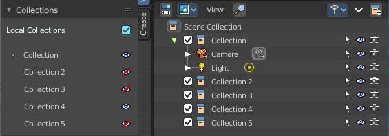
Allows the list of visible collections to be controlled per viewport rather than globally.
List of Collections
The Collections panel shows a list of collections. They can be hidden in the viewport by clicking on the eye icon.
If a collection contains objects, there is a circle to the left of the collection name. If a collection is empty, there is no circle to the left of the collection name.
By clicking directly on the collection names, it “isolates” the collection by hiding all other collections, and showing the direct parents and all the children of the selected collection.
View tab - Annotations Panel
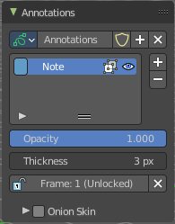
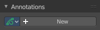
Manage the Annotation layers and materials.
When you don't have drawn an annotation yet then the panel just contains a New button.
Annotations prop
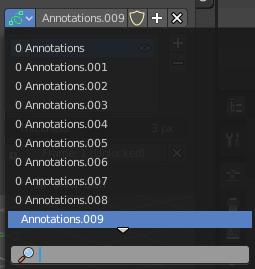
Add, remove and rename new annotations.
Drop down box
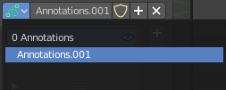
A list of the available annotation layers.
| Entry | What it does |
|---|---|
| Edit Box | The name of the current annotation. You can rename the annotation to your needs here. |
| Fake User | Assign a fake user to this annotation. Fake users is an odd concept to keep data in the scene even if it has no user somewhere. The fake user is then a dummy user so that the object is not deleted when saving the scene. |
List of Annotation Strokes
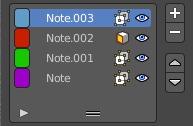
Here you see your Annotation layers for the current Annotation. Every layer can have an own color.
At the right side you find buttons to sort them and to add and remove new Annotation layers.
You can change the color by clicking at the color field. A color dialog will pop up. You can rename annotation layers by double clicking at it.
| Entry | What it does |
|---|---|
| In Front | Toggle if the stroke is displayed in front of geometry or behind. |
| Eye icon | The eye icon allows you to make it invisible And it has a search field. |
| Add Annotation | Add a new annotation. |
| Delete Annotation | Delete the annotation. |
| Move up / Down | Move the selected annotation up or down in the list |
| Entry | What it does |
|---|---|
| Opacity | The opacity of the stroke. |
| Thickness | The thickness of the annotation stroke. |
| Frame Locked/Unlocked | Lock frame displayed by current layer. This toggles whether the active layer is the only one that can be edited. |
Onion Skin
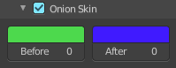
Enable Onion Skinning.
Onion Skinning allows to show ghosts of the keyframes before and after the current frame. In this sub panel you can adjust the color of the onion skin frames.
With the numbers below the colors you can define how many frames before or after are displayed that way.
View tab - Stereoscopy Panel
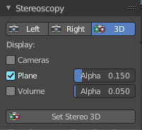
This panel shows when you have Stereoscopy enabled in the Output Properties of the Properties editor. Some content depends of the Stereoscopy settings.
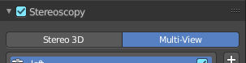
Left / Right / 3D
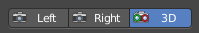
With Stereoscopy setting Stereo 3D.
Show the image in the 3d view from the left or right camera, or from both.
Views / 3D
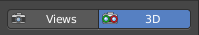
With Stereoscopy setting Multi-View.
Show the image in the 3d view from the single cameras, or from both.
| Entry | What it does |
|---|---|
| Cameras | With Stereoscopy setting Stereo 3D. Show the left and right cameras. |
| Plane | Show the convergence plane. · Alpha: The transparency of the convergence plane. |
| Volume | Show the stereoscopy volume. · Alpha: The transparency of the stereoscopy volume. |
Set Stereo 3D
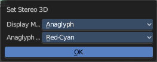
Calls a panel where you can adjust the stereoscopy display in the 3D view to preview the result.
This settings does not affect the output, just how the result gets displayed in the viewport!
Display Mode
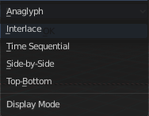
How to display the stereoscopic image when viewing through the camera. This is the preview mode. You need a special monitor for some of the methods. There are five methods available.
Display Mode Type Anaglyph
Render Views for left and right eyes as two differently filtered colors in a single image. You need anaglyph glasses to see the 3d effect.
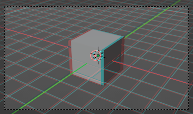
Anaglyph Type
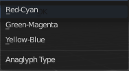
The color model to display the graphics.
Display Mode Type Interlace
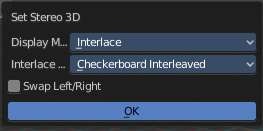
Render Views from left and right eyes interlaced into a single image. You need a 3D Ready monitor to see the stereo effect.
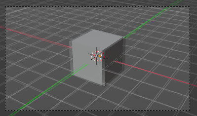
Interlace Type
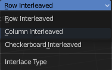
The interlace type that you can choose.
Swap Left/Right
Swaps left and right camera view.
Display Mode Type Time Sequential
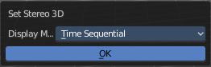
Render alternate eyes. Also known as page flip. Needs a graphics card that supports quad buffer.
Display Mode Type Side by Side
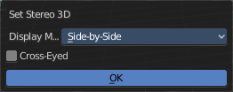
Displays images of the two cameras side by side. You need to go into Window Full screen to see the effect.
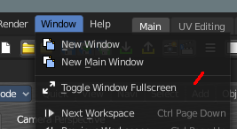
Don't use the full screen. feature in the View menu of the 3D view, but the Window toggle full screen. in the Window menu!
Warning: the menus becomes nearly unreadable then. The whole UI gets distorted by splitting the main window of Bforartists into two views. You might want to assign a shortcut here before trying.
Cross Eyed
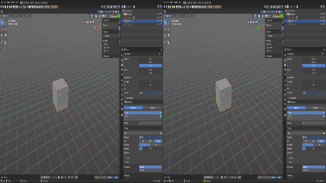
Swaps left and right camera view.
Display Mode Type Top Bottom
Displays images of the two cameras top and bottom. You need to go into Window Full screen to see the effect.
Don't use the full screen. feature in the View menu of the 3D view, but the Window toggle full screen. in the Window menu!
Warning: the menus becomes nearly unreadable then. The whole UI gets distorted by splitting the main window of Bforartists into two views. You might want to assign a shortcut here before trying.
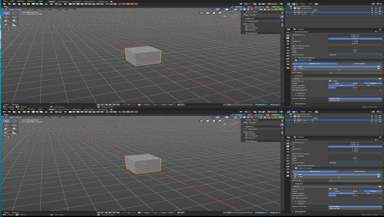
View tab - Quad View panel
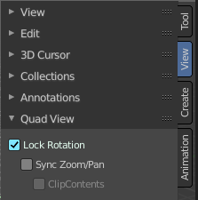
This panel just shows when you are in quad view. Toggle Quad View can be found in the View menu.
Lock rotation
Quad view has four windows. Three of them can be locked to the orthographic views.
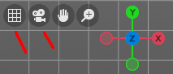
Turning off Lock Rotation reveals the quick navigation buttons Switch to Camera View and Switch between Perspectivic and Orthographic display.
| Entry | What it does |
|---|---|
| Sync Zoom Pan | In the three orthographic views you can either zoom and pan individually. Or you zoom and pan them in sync. |
| Clip Contents | Clip objects based on what is visible in the other orthographic side views. The perspectivic view is not affected. |
View tab - Important Hotkeys
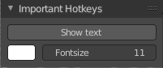
This panel is an addon called Important Hotkeys, and can be turned off in the Preferences.
It displays the most important hotkeys in the viewport.
| Entry | What it does |
|---|---|
| Show Text | Show or hide the text in the viewport. |
| Color | Define what color the text should have. Default is white. |
Font Size
The size of the font.
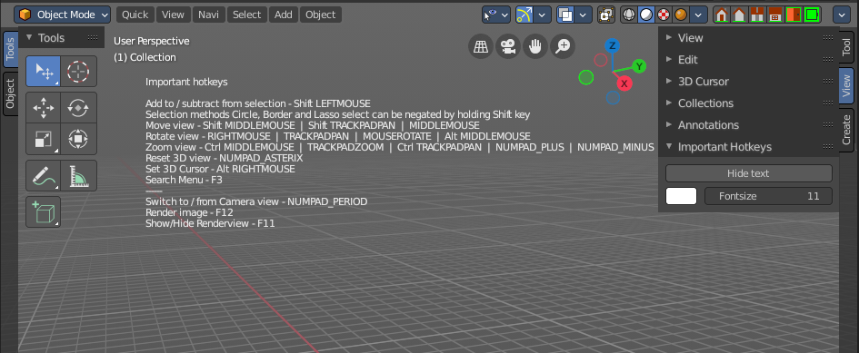